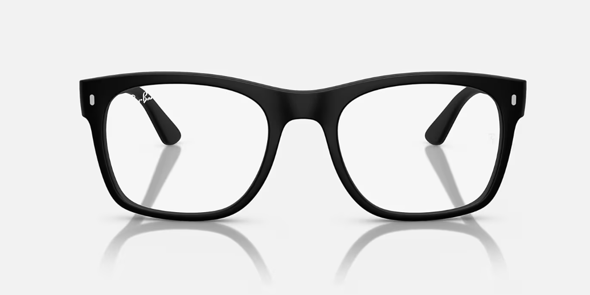

Try Frames Online (Beta)
Turn on your camera to see how frames might look on your face. This is for fun and education only — not a substitute for in-person fitting or professional dispensing.
🔒 Camera access stays in your browser. EyeKnowMD does not record or save any images.

Tip: Center your face. Adjust the overlay until the frame roughly matches your eye level and head size. For real prescriptions and final frame selection, always see an eye care professional in person.